-
Angela Orlov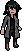
- Ordenamento
Jovem educada, doce, amorosa e protetora, natureza gentil, mas seria em momentos precisos, não é arrogante ou orgulhosa e respeitosa.
-
Jonathan Martins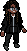
- Mercurio
Uma pessoa bem quieta e fechada, mas se vier falar comigo sobre computador ou assuntos nerd, eu irei falar por meia hora sem parar, e quem sabe, vire meu amigo, trabalho com cyber segurança, então eu consigo descobrir a maioria das fraquezas das maiorias dos sistemas em que trabalho.
-
Lucio Gaviera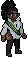
- Medo
Sou alguém de boa, tranquilo, não gosto de aperreiro. Gosto de um bom pagode, comida de bar, e daquela boa e velha resenha entre amigos.
-
Ludrizo Gavieira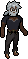
- Bravura
Homem moreno, alto e carismático, cicatriz no olho esquerdo, usa óculos de lente laranja Vive falando besteira
-
Athena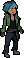
- Sangue
Athena é uma mulher de 21 anos, com uns 1,78 de altura, tem a pele morena, os cabelos ondulados e pintados de azul escuro e claro. Usa roupas escuras, as vezes uma touca e curte rock, pop, e a maioria dos generos musicais. Athena toca guitarra e baixo, é uma pessoa extrovertida e bem agitada.
-
Eva Asten

- Decadência
Eva Asten é uma médica de 30 anos, ela tem 1,50 de altura e vive com cara de cansada.
-
Emilio Garcia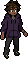
- Conhecimento
Emilio tem 19 anos e 1,78 de altura. Veio da Guatemala para o Brasil em 2011. Um jovem mais fechado, um pouco despojado que mantêm a postura séria. Trabalha no estoque de um mercado por meio turno.
-
Jacob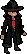
- Vida
Jacob não sai muito de casa, tirando quando vai trabalhar ou quando treina esgrima um de seus hobbies, adora jogos sejam antigos ou novos e constantemente assiste séries de detetive ou de mistério, seus doce favorito é chocolate amargo, gosta de panquecas salgadas e doces, Às vezes desenha enquanto está pensativo ou para baixo, Quase todo mês tem um pesadelo sobre aquele dia, Sempre sentiu interesse em treinar com armas de fogo, infelizmente ainda não conseguiu mas em compensação aprendeu um pouco de arquearia melhorando sua mira e precisão, Ironicamente não tem um arco e flecha mas constantemente visita lugares para praticar sua mira.
-
Jade Orlov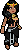
- ?????
Introvertida, educada, madura, séria em momentos certos.
-
Miguel Gavieira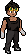
- Energia
descrição 10
-
Neomi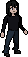
- ?????
A imagem que vejo quando me olho no espelho e a memória de uma voz irreconhecível me chamando de "Neomi" são todas as pistas que tenho sobre mim.
-
Eikko Wellinger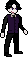
- Abismo
Não há espaço para censuras neste mundo.